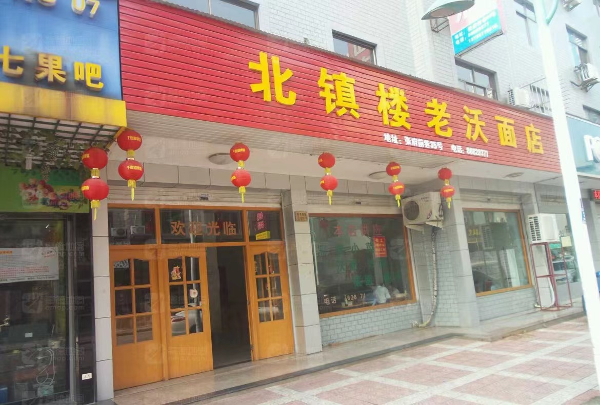

| 您当前的位置： 首页 > 本地美食 > 东阳沃面 |
美食介绍
早年在东阳民间，人们习惯把吃剩下的菜、汤用来煮面条，再用番薯淀粉制成糊面，既营养丰富，又易消化吸收。 随着时代的变迁和经济的发展，食物也在悄然发生着变革。 如今的东阳沃面，都经过厨师的精心烹作，食材自然也不再是原先的剩菜残汤。 然而沃面自成一派的独特味道，却一直在人们口中留传，逐渐成为了一道款待亲友的美食。
青菜的翠绿，河虾的嫩红，猪肚的奶白和木耳的纯黑，搭配个人喜好的肉丝等材料，色彩鲜艳，营养丰富。 东阳沃面虽发端于穷苦灶头，但烹饪技法却活用了烩、汤、勾芡的原理，简直是化腐朽为神奇的典范。 旧时的沃面体现了东阳人困苦时的勤俭，如今丰富的物质生活让我们怀念淳朴过去的同时，也更加珍惜当下的幸福味道。
美食制作
食材明细
- 咸鲜 口味
- 廿分钟 耗时
- 简单 难度
做法步骤
-
1准备食材
-
2起好油锅，先炒肉丝、木耳，后将备好的河虾、肚丝、蛋丝和面条入锅煮开。“煮开”是东阳当地的口语，即“水滚”之意。
-
3煮开之后，就可“沃”了——把精细的玉米粉（亦可稍稍加点番薯淀粉，以增加其黏稠度）用水和匀，舀几勺放到锅里，搅拌，煮开，即成“沃面”。
推荐餐厅

北镇楼沃面店 到这去
东阳的老字号店，古老口味较好的一家地道本地面馆，袄面是一流的。来吃面的人当中老年客人占到一定的比例。